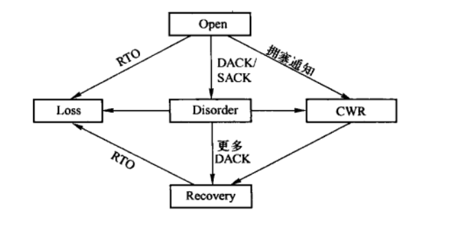
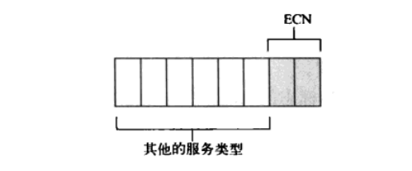
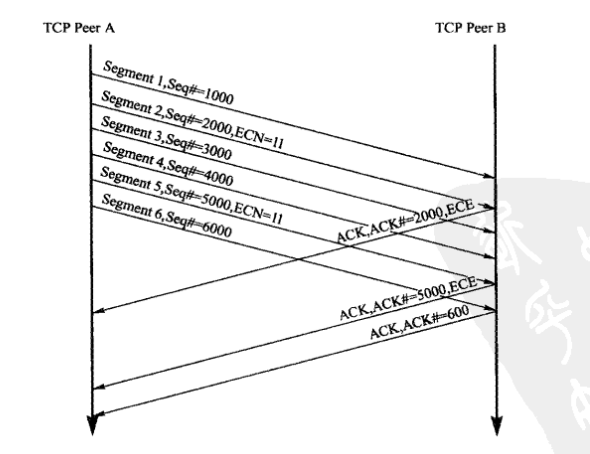

TCP拥塞控制实现
Table of Contents
1 拥塞控制引擎
Linux符合TCP拥塞控制的规范，但是在实现时采用了不同的方法。
Linux通过比较拥塞窗口以及SND.NXT和SND.UNA的差值来确定但前有多少仍在网络中传输并且没有被确认的段。 然后通过比较拥塞窗口和这些传输中的段数量，来确定可以发送多少段。 Linux跟踪这些传输中的满负荷（full-sized）的段数量，而在TCP规范和其他实现中是比较cwnd和一传输字节数。如果发送小片的段，这两种不同实现的结果是：如果是以字节为单位的拥塞窗口，它在拥塞窗口中的每个满负荷的段允许多个小TCP段被发送到网络中。但另一方面，Linux在拥塞窗口中的每个段只允许发送一个包，不考虑包的大小。因此，对于多个小片段构成的有效载荷，Linux采用的方法与以字节为单位的方法相比是比较保守的。
Linux的TCP发送方支持以NewReno恢复和SACK恢复这两种算法来确定正在传送段的数目是，使用同一组概念和函数。 使用SACK选项时，发送方既可以遵循提前确认（FACK）方法，把SACK块之间的空隙最为丢失段，也可以根据IETF[3]对目前的工作采取较保守的相似做法。后一种选择中，为确认的段被认为是正在网络中传输。作为所有恢复方法的基础。Linux的TCP都使用如下公式来确定正在网络中传输的段数：
- left_out <= sacked_out + lost_out
- in_flight <= packets_out - left_out + retrans_out
在上述公式中，packets_out是SND.UNA之后最初被传输段的序号，sacked_out是SACK选项确认的段数，lost_out是网络中丢失段数的估值，retrans_out是重传的段数。 一般根据选择恢复方法来确定丢失的段数，例如，当FACK使用时，认为最后的SACK块和最后已确认段之间的未确认段已丢失。
在没有启用SACK选项时，TCP依靠每个接收到的DACK对sacked_out进行累计。这和TCP拥塞控制规范一致，其结果表现类似于向前传输的NewReno算法。Linux选择的设计不要求任意调节拥塞窗口，而cwnd保存在快速恢复过程中，表示允许网络中传送的段数目的有效值。
用以追踪正在传输、已确认、丢失或者重传包数目的计数器，需要一些附加数据结构。Linux发送方在记分牌中保存每个正在发送段的状态，在此标记段的已知状态。段可以被标记为正在传送、已确认、已重传或者丢失。也有可能是这些状态的组合（例如已丢失++重传，这种情况下发送方希望得到一个重传的确认）。使用该信息，Linux发送方知道哪些段需要重传，当一个新确认到达时怎样调节用以确定正在传送的计数器。记分牌在确定一个段是否已经被错误的假设为丢失时也扮演着重要角色，例如因为包的重排序。
记分牌标记和用于确定正在传送变量的计数器必须在任何时间都处于一致状态。
NewReno恢复中，当发送方进入快速恢复，第一个未确认的段被标记为丢失，这符合IETF拥塞控制规范的快速重传。更进一步，当局部ACK不是确认在快速恢复开始时到达的所有数据时，第一个未确认的段被标记为丢失，这导致下一个未确认段的重传。？？？？
当启用SACK时，可能同时有超过一个段被标记为丢失。使用保守方法，TCP发送方不把已被确认的数据块之间的空隙计入丢失，但如果启用了FACK，则SACK数据块之间的空隙会被发送方标记为丢失，并是适时调整丢失计数器。
2 拥塞控制状态机
当确认到达时，TCP发送发由一种确定发送方行为的状态机来管理。拥塞控制状态机如下图：

Figure 1: 拥塞控制状态机
TCP在下面所提到的任何一个状态中，都避免现实调用传输一个包，例如，关于快速重传。当前的拥塞控制状态决定如何调节拥塞窗口、发送方是否将未确认数据段认作丢失。根据当前所处的状态处理完一个新到的确认后，正在传送的数据小于cwnd时，TCP发送方可以传送数据段。发送方重传先前标记为丢失且还未重传的数据段，如果没有丢失段等待重传则发送新的数据段。
有时会出现正在发送的包数量突然减少几个段的情况。例如，一个重传段以及其后继向前传输可能以单个累计ACK来确认。这些情况可能导致网络中传输数据的突增，除非考虑了TCP发送方的执行。TCP发送方限制拥塞窗口来避免这种突增，允许一个新到ACK最多发送三个段。以为突增避免或许会使拥塞窗口减小到低于慢启动阈值，几个段被一个ACK确认后，发送方可能进入慢启动。
当一个TCP建立连接后，许多TCP变量需要初始化为固定值。然而，为了在连接一开始提高通信效率，TCP发送方的慢启动阈值保存在它的目的路由缓存中，用于估计RTO。如果在该目的的路由缓存中发现另一个到相同目标IP地址的连接已经建立，那么该缓存值可以用来为新的TCP连接获取适当的初始值。如果发送方和接收端之间的网络条件由于某种原因发生改变，目的路由缓存中的值会立即过期并老化。
2.1 Open状态
Open状态是常态，在这种情况下TCP发送方通过优化后的快速路径来处理接收ACK。当一个确认到达时，发送方根据拥塞窗口是小于还是大于慢启动阈值，按慢启动或者拥塞避免来增大拥塞窗口。
2.2 Disorder状态
当发送方检测到DACK（重复确认）或者SACK（选择性确认）时，将转变为Disorder（无序）状态。在该状态下拥塞窗口不做调整，而是每个新到的段出发一个新数据段的发送。因此，TCP发送方遵循包守恒原则，该原则规定一个新包只有在一个老的包离开网络后才发送。在实践中该规定的表现类似与IETF的传输提议，允许当拥塞窗口较小或是上个传输窗口中有大量的数据段丢失时，使用快速重传以更有效的恢复。
2.3 CWR状态
TCP发送方可能从显式拥塞通知、ICMP源端抑制（ICMP source quench）或是本地设备接收到拥塞通知。当接收到一个拥塞通知时，发送方并不立刻减小拥塞窗口，而是每隔一个新到的ACK减小一个段知道窗口的大小减半为止。发送方在减小拥塞窗口大小的过程中不会有明显的重传，这就处于CWR（拥塞窗口减小）状态。CWR状态可以被下面提到的Recovery或者Loss状态中断。
/* Set slow start threshold and cwnd not falling to slow start */ void tcp_enter_cwr(struct sock *sk) { struct tcp_sock *tp = tcp_sk(sk); //进入CWR后不需要拥塞窗口撤销了，因此需要清除拥塞控制的慢启动阈值的旧值。 tp->prior_ssthresh = 0; //进入CWR和Disorder后，不需要累计bytes_acked了 tp->bytes_acked = 0; //在Open或Disorder状态才能迁移到CWR状态。 if (inet_csk(sk)->icsk_ca_state < TCP_CA_CWR) { //进入CWR状态后不允许再进行拥塞窗口撤销了 tp->undo_marker = 0; //根据不同的拥塞算法重新设置拥塞慢启动阈值，同时微调拥塞窗口大小并清零snd_cwnd_cnt tp->snd_ssthresh = inet_csk(sk)->icsk_ca_ops->ssthresh(sk); tp->snd_cwnd = min(tp->snd_cwnd, tcp_packets_in_flight(tp) + 1U); tp->snd_cwnd_cnt = 0; //记录拥塞时的SND.NXT tp->high_seq = tp->snd_nxt; //记录最后一次调整拥塞窗口的时间 tp->snd_cwnd_stamp = tcp_time_stamp; //设置TCP_ECN_QUEUE_CWR标志，标识由于收到显式拥塞通知而进入拥塞状态 TCP_ECN_queue_cwr(tp); //设置当前拥塞状态为CWR tcp_set_ca_state(sk, TCP_CA_CWR); } }
2.4 Recovery状态
在足够多的连续重复ACK到达后，发送方重传第一个没有被确认的段，进入Recovery（恢复）状态。默认情况下，进入Recovery状态的条件是三个连续的重复ACK，TCP拥塞控制规范也是这么推荐的。在Recovery状态期间，拥塞窗口的大小每隔一个新到的确认减少一个段，和CWR状态类似。这种窗口减小过程终止于拥塞窗口大小等于ssthresh，即进入Recovery状态时窗口大小的一半。拥塞窗口在恢复状态期间 不会增大 ，发送方重传那些被标记为丢失的段，或者根据包守恒原则在新数据上标记向前传输。发送方保持Recovery状态直到所有进入Recovery状态时正在发送的数据段都成功的被确认，之后该发送方恢复Open状态。重传超时有可能中断Recovery状态。
2.5 Loss状态
当一个RTO到期，发送方进入Loss状态。多有正在发送的数据段标记为丢失，拥塞窗口设置为一个段，发送方因此按慢启动算法增大拥塞窗口。Loss和Recovery状态的一个主要区别是：在Loss状态，拥塞窗口在发送方重置为一个段后增大，而Recovery状态下拥塞窗口只能被减小。Loss状态不能被其他的状态中断，因此，发送方只能在所有Loss开始时正在传输的数据都成功得到确认后，才能退到Open状态。例如，快速重传不能在Loss状态期间被触发，这个和NewReno规范一致。
当一个RTO超时，或者接收到的ACK确认已经被先前的SACK确认过，则意味着我们记录的SACK信息不能反映接收方的实际状态，此时都会进入Loss状态，参见超时重传定时器例程和tcp_check_sack_reneging()。
调用tcp_enter_loss()会进入Loss状态。其中参数how如果不为0，则在设置丢失标志时会清除重传段的SACK标志，否则会保持SACK标志。并且可以通过判断ACK是否确认了先前已经被SACK确认的段检测，检测接收方是否删除了保存到失序队列中的段。
/* Enter Loss state. If "how" is not zero, forget all SACK information * and reset tags completely, otherwise preserve SACKs. If receiver * dropped its ofo queue, we will know this due to reneging detection. */ void tcp_enter_loss(struct sock *sk, int how) { const struct inet_connection_sock *icsk = inet_csk(sk); struct tcp_sock *tp = tcp_sk(sk); struct sk_buff *skb; int cnt = 0; /* Reduce ssthresh if it has not yet been made inside this window. */ /* 如果是刚进入Loss状态，则需要设置发送拥塞窗口的阈值，同时在设置阈值前保存当前的阈值， 以便在拥塞窗口调整撤销时使用。再发送CA_EVENT_LOSS拥塞时间给具体拥塞算法模块。 */ if (icsk->icsk_ca_state <= TCP_CA_Disorder || tp->snd_una == tp->high_seq || (icsk->icsk_ca_state == TCP_CA_Loss && !icsk->icsk_retransmits)) { tp->prior_ssthresh = tcp_current_ssthresh(sk); tp->snd_ssthresh = icsk->icsk_ca_ops->ssthresh(sk); tcp_ca_event(sk, CA_EVENT_LOSS); } //进入Loss状态，将拥塞窗口设置为1个段大小 tp->snd_cwnd = 1; //由于调整了拥塞窗口大小，也需要对snd_cwnd_cnt进行清零，同时记录最后一次检验拥塞窗口的时间 snd_cwnd_stamp tp->snd_cwnd_cnt = 0; tp->snd_cwnd_stamp = tcp_time_stamp; //由于进入了Loss状态，对bytes_acked进行清零，同时需要对有关重传的变量进行清零。 tp->bytes_acked = 0; tcp_clear_retrans(tp); /* Push undo marker, if it was plain RTO and nothing * was retransmitted. */ if (!how) //如果不清楚SACK标记，则需要记录SND.UMA，以便在合适的时候能够进行拥塞窗口的调整撤销操作。 tp->undo_marker = tp->snd_una; //遍历发送队列 sk_stream_for_retrans_queue(skb, sk) { //获取段中GSO分段的数量，用于累计fackets_out cnt += tcp_skb_pcount(skb); /*如果重传队列中段的记分牌已经有重传标志，则清除拥塞窗口调整撤销标记 */ if (TCP_SKB_CB(skb)->sacked&TCPCB_RETRANS) tp->undo_marker = 0; //将重传队列中段记分牌去掉重传和丢失标记 TCP_SKB_CB(skb)->sacked &= (~TCPCB_TAGBITS)|TCPCB_SACKED_ACKED; /* 如果重传队列中段记分牌没有SACK标志或者需要清除SACK标志，则清除SACK标志的同时 添加上LOST标记，同时统计丢失段的数量。*/ if (!(TCP_SKB_CB(skb)->sacked&TCPCB_SACKED_ACKED) || how) { TCP_SKB_CB(skb)->sacked &= ~TCPCB_SACKED_ACKED; TCP_SKB_CB(skb)->sacked |= TCPCB_LOST; tp->lost_out += tcp_skb_pcount(skb); } else {//否则更新SACK确认的数量和facket_out tp->sacked_out += tcp_skb_pcount(skb); tp->fackets_out = cnt; } } //刷新没有确认的TCP段的数量left_out tcp_sync_left_out(tp); //重新设置reordering tp->reordering = min_t(unsigned int, tp->reordering, sysctl_tcp_reordering); //设置当前的拥塞状态为Loss tcp_set_ca_state(sk, TCP_CA_Loss); tp->high_seq = tp->snd_nxt; //记录拥塞发生时的SND.NXT TCP_ECN_queue_cwr(tp); //设置ecn_flags,表示发送方进入拥塞状态。 //清除有关重传的记忆变量 clear_all_retrans_hints(tp); }
3 拥塞窗口调整撤销
由于当前在因特网上所应用的机制不支持显式丢包信息给TCP发送方，因此在追踪丢失的包时需要推测。例如，重新排序对TCP发送方来说通常是个问题，因为它不能分清缺失的ACK是因为包丢失还是包由于延迟稍后到达。然而，TCP发送方能够探测不必要的拥塞窗口调节，对拥塞控制参数做修正。为此，进入Recovery或Loss状态时，TCP发送方存储ssthresh调节之前的旧值。
延迟段可能会由于虚假重传超时或者包重排序而触发不必要的重传。TCP发送方主要有两种方法来探测其是否不必要的重传了包。 第一，重复SACK（D-SACK）可以通知接收方，新到的段是已经接收过的。如果所有在最近一次恢复期间重传的段都被D-SACK确认了，发送方就知道恢复期被不必要的触发了。第二，TCP发送方可以使用附在每个TCP首部的时间戳选项来探测不必要的重传。当使用该选项时，TCP接收方回显触发确认的发送方的数据段时间戳，允许TCP发送方确定ACK是被原始的还是重传的段触发。Eifel算法使用类似方法来探测假重传。
当使用TCP时间戳探测到一个不必要的重传时，撤销拥塞窗口调整的逻辑是比较简单的。如果发送方处于Loss状态，即在一个不必要被触发的RTO之后正在重传，移除记分牌中所有段的LOSS标记，从而使发送方继续发送新数据，而不再重传。此外，cwnd设置为当前值和（ssthresh*2）的最大值，ssthresh设置为之前存储的值。因为在探测到包丢失时，ssthresh被设置为正在传送段数目的一半，当进入Loss状态时，则继续进行拥塞避免。
当发送方处于Recovery状态时，也能使用TCP时间戳来探测不必要的重传。这种情况下Recovery状态正常结束，只是拥塞窗口增加到其当前值和（ssthresh*2）的最大值，ssthresh设置为之前存储的值。此外，当一个不必要重传的局部ACK到达时，发送方并不为下一个还未被确认的段标记丢失，而是可能按照当前的记分牌标记继续传输新数据。
为了使用D-SACK来撤销拥塞窗口参数，TCP发送方跟踪在恢复拥塞控制参数之前必须被声明为没必要的重传的数目。发送方在探测一个D-SACK块时，可恢复重传数减一。如果D-SACK块最终确认了在最近窗口中的每个不必要的重传，重传计数器因为D-SACK降至0,发送方增大拥塞窗口，回复最新一次对ssthresh的修改。
当处理不必要的重传时，TCP发送方在变量reordering中维持一个度量来保存在网络中测量观察到的重新排序阈值。该变量在连接完成后也存储到目标路由缓存中。当发送方在Recovery状态期间通过TCP时间戳或D-SACK探测到不必要的重传，或者当接到确认是SACK序号空隙中的一个未确认段时，reordering被更新。在这些情况下reordering设置为最高确认段和当前确认段之间的段数目，换句话说，符合在网络中探测到的段重排序的最大间隔。此外，如果当探测到重排序时正在使用FACK,发送方转而使用SACK的保守变量，这不至于在网络重排序时，太过激进。
3.1 撤销拥塞窗口的检测
在进行拥塞窗口调整撤销前，必须先用tcp_may_und()检测是否能够撤销。
检测条件：
- 正在使用F-RTO算法进行发送超时处理，或进入Recovery进行重传，或进入Loss开始慢启动。
- 没有可撤销的重传段数，或者没有重传或者重传之后还没有接收到对方的确认。
static inline int tcp_may_undo(struct tcp_sock *tp) { return tp->undo_marker && (!tp->undo_retrans || tcp_packet_delayed(tp)); }
3.2 tcp_undo_cwr()
该函数用来撤销“缩小拥塞窗口”，是拥塞窗口撤销调整时的通用函数，他被tcp_try_undo_dsack()、tcp_try_undo_recovery()、tcp_try_undo_loss()、tcp_undo_partial()调用。
static void tcp_undo_cwr(struct sock *sk, const int undo) //需要撤销的慢启动阈值 { struct tcp_sock *tp = tcp_sk(sk); if (tp->prior_ssthresh) { //是否存保存了旧的慢启动阈值 const struct inet_connection_sock *icsk = inet_csk(sk); //如果存在undo_cwnd接口，调用 undo_cwnd接口设置拥塞窗口大小 if (icsk->icsk_ca_ops->undo_cwnd) tp->snd_cwnd = icsk->icsk_ca_ops->undo_cwnd(sk); else //否则在当前的拥塞窗口和慢启动阈值的2倍之间取最大值作为当前拥塞窗口大小 tp->snd_cwnd = max(tp->snd_cwnd, tp->snd_ssthresh<<1); if (undo && tp->prior_ssthresh > tp->snd_ssthresh) { tp->snd_ssthresh = tp->prior_ssthresh;//撤销慢启动阈值 //取消TCP_ECN_DEMAND_CWR标志 TCP_ECN_withdraw_cwr(tp); } } else { //不存在旧的慢启动阈值，则将当前拥塞窗口和慢启动阈值之间的最大值最为当前的拥塞窗口。 tp->snd_cwnd = max(tp->snd_cwnd, tp->snd_ssthresh); } //对拥塞窗口进行微调，取拥塞窗口大小和已经发送但未确认段数量加3之间的最小值当作当前拥塞窗口。 tcp_moderate_cwnd(tp); tp->snd_cwnd_stamp = tcp_time_stamp; //时间戳 /* There is something screwy going on with the retrans hints after an undo */ //禽畜有关重传的记忆变量 clear_all_retrans_hints(tp); }
3.3 从Disorder拥塞状态撤销
在Discoder拥塞状态，如果D-SACK确认了所有重传的的段，则会调用tcp_undo_cwr()函数进行拥塞窗口的撤销。
先通过undo_marker和undo_retrans来检测是否可以进行撤销操作，然后调用tcp_undo_cwr()进行撤销操作，完成后复位undo_marker标志。
3.4 从Recovery状态撤销
在Recovery拥塞状态，如果ACK确认了部分重传的段，则会调用tcp_try_undo_partial()函数进行拥塞窗口的撤销，参数acked是此次确认了段的数目。
/* Undo during fast recovery after partial ACK. */ static int tcp_try_undo_partial(struct sock *sk, struct tcp_sock *tp, int acked) { /* Partial ACK arrived. Force Hoe's retransmit. */ int failed = IsReno(tp) || tp->fackets_out>tp->reordering; if (tcp_may_undo(tp)) { /* Plain luck! Hole if filled with delayed * packet, rather than with a retransmit. */ if (tp->retrans_out == 0) tp->retrans_stamp = 0; tcp_update_reordering(sk, tcp_fackets_out(tp) + acked, 1); DBGUNDO(sk, tp, "Hoe"); tcp_undo_cwr(sk, 0); NET_INC_STATS_BH(LINUX_MIB_TCPPARTIALUNDO); /* So... Do not make Hoe's retransmit yet. * If the first packet was delayed, the rest * ones are most probably delayed as well. */ failed = 0; } return failed; }
3.5 从Recovery拥塞状态撤销
一下代码尝试从Loss或Recovery状态撤销。
/* People celebrate: "We love our President!" */ static int tcp_try_undo_recovery(struct sock *sk, struct tcp_sock *tp) { //如果可以进行撤销，则恢复拥塞窗口和拥塞控制时慢启动的阈值，完成撤销后复位撤销标志 if (tcp_may_undo(tp)) { /* Happy end! We did not retransmit anything * or our original transmission succeeded. */ DBGUNDO(sk, tp, inet_csk(sk)->icsk_ca_state == TCP_CA_Loss ? "loss" : "retrans"); tcp_undo_cwr(sk, 1); if (inet_csk(sk)->icsk_ca_state == TCP_CA_Loss) NET_INC_STATS_BH(LINUX_MIB_TCPLOSSUNDO); else NET_INC_STATS_BH(LINUX_MIB_TCPFULLUNDO); tp->undo_marker = 0; } //如果不支持SACK，则需要防止虚假的快速重传，不能立即撤销到Open状态，只对拥塞窗口进行微调。 if (tp->snd_una == tp->high_seq && IsReno(tp)) { /* Hold old state until something *above* high_seq * is ACKed. For Reno it is MUST to prevent false * fast retransmits (RFC2582). SACK TCP is safe. */ tcp_moderate_cwnd(tp); return 1; } //如果支持SACK,则撤销到Open状态 tcp_set_ca_state(sk, TCP_CA_Open); return 0; }
3.6 从Loss拥塞状态撤销
以下代码用于在接收到新的确认时，尝试从Loss状态进入Open状态。返回值返回1，表示撤销成功，返回0，表示撤销失败。
/* Undo during loss recovery after partial ACK. */ static int tcp_try_undo_loss(struct sock *sk, struct tcp_sock *tp) { //测试是否可以从Loss状态撤销 if (tcp_may_undo(tp)) { struct sk_buff *skb; sk_stream_for_retrans_queue(skb, sk) {//如果可以撤销，则清除重传队列中段的记分牌上的LOST标志 TCP_SKB_CB(skb)->sacked &= ~TCPCB_LOST; } //清楚所有与拥塞控制相关的一组hint clear_all_retrans_hints(tp); //重新计算lost_out 和 left_out，撤销“缩小拥塞窗口”，清除拥塞窗口调整撤销标记。 DBGUNDO(sk, tp, "partial loss"); tp->lost_out = 0; tp->left_out = tp->sacked_out; tcp_undo_cwr(sk, 1); NET_INC_STATS_BH(LINUX_MIB_TCPLOSSUNDO); inet_csk(sk)->icsk_retransmits = 0; tp->undo_marker = 0; if (!IsReno(tp)) //如果不支持SACK,则进入Open状态。 tcp_set_ca_state(sk, TCP_CA_Open); return 1; } return 0; }
4 显式拥塞通知
为了处理网络中的拥塞，出现了第二种避免隐式测量的技术，称为显式拥塞通知，路由器在出现拥塞时通知TCP。当TCP段传递时，路由器使用IP首部中的一对比特位来记录拥塞。这样，当TCP段到达后，接收方知道报文段是否在某个位置经历过拥塞。然而需要了解拥塞发生情况的是发送方，而非接收方。因此，接收方使用下一个ACK通知发送方有拥塞发生，然后，发送方做出响应，缩小自己的拥塞窗口。
ECN(显式拥塞通知)使用IP首部的两个比特位，以便让路由器记录拥塞状态，并使用TCP首部中的两个位（取自保留位），以便让发送方和接收方的TCP层相互通信。接收方使用其中一个TCP首部的比特位将拥塞信息送回发送方;发送方使用另一个比特位将自己收到的拥塞通知的信息通知接收方。IP首部中的两个比特位是使用的服务类型字段中的比特位。路由器可以选择设置其中任何一个比特位，表示拥塞已经发生（使用两个比特是为了让该机制更加稳健）。
当前TCP实现将TCP端结点之间的中间网络视为一个不透明的“黑盒”。TCP段进入和流出这个盒子，有些时候进入盒子的包被丢失了。TCP假设包的丢失和大程度上是因为路由器的拥塞，也即是路由器用来容纳进入包的缓冲区已经被填满了，这样路由器会“静默”的丢弃接下来进入的包。
尽管TCP可以检测到TCP包的丢失并且进行重传，但是从TCP处理过程、重传过程和吞吐率下降这些方面看，这个重传过程会耗费较多的网络资源。
当一个发送方检测到一个包丢失时，可以进行快速重传，或者因包的重传计时器超时而重传。接收到拥塞通知后，该TCP端可以减小发送窗口（在等待响应之前可以发送的包数量），进行慢启动和拥塞避免算法。这可以迅速的降低发送方速率，一边减轻路由器压力。而发送方会逐渐将发送窗口恢复到拥塞发生前的大小。
4.1 IP对ECN的支持
IP和TCP使用首部中的未使用字段来支持ECN。
在网络层中，一个发送主机必须能够表明自身可以进行ECN，路由器在转发时必须能够表明它正在经历拥塞。
在传输层(TCP)，TCP端必须对发送方表明自身是可以进行ECN操作的。接收端必须能够通知发送方它接收到了一个来自路由器的拥塞通告。发送方必须能够通知接收端它收到了来自接收端的通告，并且已经降低了发送速率。
IP首部中的8位服务类型域（TOS）原先在RFC791中被定义为表明包的发送优先级、时延、吞吐量、可靠性和消耗等特征。在RFC2474中被重新定义为包含一个6位的区分服务码点（DSCP）和两个未用的位。DSCP值表明一个在路由器上配置的和队列相关联的发送优先级。IP对ECN的支持拥到了TOS域中剩下的这两位：

在RFC2474中TOS域未使用的两位在RFC3168中被定义为ECN域：
| ECN域 | 描述 |
|---|---|
| 00 | 发送主机不支持ECN |
| 01或者10 | 发送主机支持ECN |
| 11 | 路由器正在经历拥塞 |
一个支持ECN的主机发送数据包时将ECN设置为 01 或者 10。对于支持ECN的主机发送的包，如果路径上的路由器支持ECN并且经历拥塞，它将ECN域设置为11。如果该数值已经被设置为11，那么下有路径上的路由器不会修改该值。
4.2 TCP对ECN的支持
当一个IP包的ECN域被路由器设置为11时，接收端得到通知：路径上发生了拥塞。ECN使用TCP首部来告知发送方网络正在经历拥塞，并且告知接收端-发送端已经收到了接收端发来的拥塞通告，已经降低了发送速率。
TCP对ECN的支持使用TCP中预先定义的保留位。ECN定义两个新的标志：
+-------------+-+-+-+-+-+-+-+-+ | |C|E|U|A|P|R|S|F| | Reserved |R|C|R|C|S|S|Y|I| | |W|E|G|K|H|T|N|N| +-------------+-+-+-+-+-+-+-+-+
两个新标志意义如下：
- ECE，ECN响应标志被用来在TCP三次握手时表明一个TCP端是支持ECN功能的，并且表明接收到的TCP段的IP首部的ECN被设置为11,参见RFC793。
- CWR，拥塞窗口减少标志由发送主机设置，用来表明它接收到了设置ECE标志的TCP段。
当两个支持ECN的TCP端进行TCP连接时，它们交换SYN、SYN+ACK和ACK段。对于支持ECN的TCP端来说，SYN段的ECE和CWR标志都被设置了，SYN的ACK只设置ECE标志。
一个支持ECN的TCP主机在支持ECN的TCP连接上发送设置了IP首部为10或者01的TCP段。支持ECN的路由器在经历拥塞时设置IP首部的ECN域为11。当一个TCP接收端发送针对收到一个设置ECN位为11的TCP段的响应时，它设置TCP首部中的ECE，并且在接下来的ACK中也做同样的设置。
当发送主机接收到设置了ECE标志的ACK时，就认为发生丢包，开始减少发送窗口，运行慢启动过程和拥塞避免算法。在下一个数据包中，发送者设置CWR标志。在接收到新的设置CWR标志的包时，接收者停止在接下来的ACK中设置ECE标志。
以下是一个支持ECN的TCP端点之间的一个TCP连接的示例：
 A发送数据给B。A首先一次性发送5个包。包2通过一个支持ECN拥塞的路由器转发，将IP首部的ECN位设置为11。当B接收到这个包，他发送设置了ECE标志的ACK。当A收到第一个设置了ECE的ACK后，降低发送速率，并且在下一个包6时设置其CWR标志。通过接收包6，A接下来取消对ACK包设置ECE标志，参见RFC3168。
5 拥塞控制状态的处理及转换
tcp_ack()处理接收到的段时，会检测ACK。如果接收的ACK是不明确的或拥塞状态在Open状态，则进行拥塞状态机的状态迁移。如果ACK确认了新的段且拥塞窗口可以更新，则进行拥塞避免，更新拥塞窗口。
/* This routine deals with incoming acks, but not outgoing ones. */ static int tcp_ack(struct sock *sk, struct sk_buff *skb, int flag) { //...... if (tcp_ack_is_dubious(sk, flag)) { /* Advance CWND, if state allows this. */ if ((flag & FLAG_DATA_ACKED) && tcp_may_raise_cwnd(sk, flag)) tcp_cong_avoid(sk, ack, seq_rtt, prior_in_flight, 0); tcp_fastretrans_alert(sk, prior_snd_una, prior_packets, flag); } else { if ((flag & FLAG_DATA_ACKED)) tcp_cong_avoid(sk, ack, seq_rtt, prior_in_flight, 1); } //...... }
5.1 拥塞控制状态的处理：tcp_fastretrans_alert()
该函数进行拥塞控制的处理，包括处理显式拥塞通知，判断SACK是否虚假，拥塞时记录的SND.NXT被确认时进行撤销，以及当前的状态处理等。
/* Process an event, which can update packets-in-flight not trivially. * Main goal of this function is to calculate new estimate for left_out, * taking into account both packets sitting in receiver's buffer and * packets lost by network. * * Besides that it does CWND reduction, when packet loss is detected * and changes state of machine. * * It does _not_ decide what to send, it is made in function * tcp_xmit_retransmit_queue(). */ static void tcp_fastretrans_alert(struct sock *sk, u32 prior_snd_una, //在处理ACK之前，在输出的段中，最早一个未确认段的序号 int prior_packets, //在拥塞控制状态转换之前，从发送队列发出而未得到确认的TCP段数目 int flag) { struct inet_connection_sock *icsk = inet_csk(sk); struct tcp_sock *tp = tcp_sk(sk); int is_dupack = (tp->snd_una == prior_snd_una && !(flag&FLAG_NOT_DUP)); //首先根据当前发出但未得到确认的TCP段数目来矫正sacked_out和fackets_out。 /* Some technical things: * 1. Reno does not count dupacks (sacked_out) automatically. */ if (!tp->packets_out) tp->sacked_out = 0; /* 2. SACK counts snd_fack in packets inaccurately. */ if (tp->sacked_out == 0) tp->fackets_out = 0; //如果收到显式拥塞通知，则禁用拥塞窗口撤销，并开始减小拥塞窗口 /* Now state machine starts. * A. ECE, hence prohibit cwnd undoing, the reduction is required. */ if (flag&FLAG_ECE) tp->prior_ssthresh = 0; /* 如果接收的ACK指向已记录的SACK,说明我们记录的SACK并没有反应接收方的真实状态，也就是说 接收方现在已经处于严重拥塞的状态或者处理上有BUG,所以接下来按照重传超时的方式处理。 按照正常的逻辑，接收的ACK不应该直线已记录的SACK,而应该直线SACK后面未接收的地方，这说明 接收方由于拥塞已经把SACK部分接收的段丢弃，或者处理有BUG,因此只能进行重传*/ /* B. In all the states check for reneging SACKs. */ if (tp->sacked_out && tcp_check_sack_reneging(sk)) return; /* 如果通过SACK发现有段丢失，则需要从重传队首或上次标识丢失段的位置开始，为记分牌为0的 段添加LOST标记，直到所有被标记LOST的段数达到packets或被标记序列号超过high_seq为止 */ /* C. Process data loss notification, provided it is valid. */ if ((flag&FLAG_DATA_LOST) && before(tp->snd_una, tp->high_seq) && icsk->icsk_ca_state != TCP_CA_Open && tp->fackets_out > tp->reordering) { tcp_mark_head_lost(sk, tp, tp->fackets_out-tp->reordering, tp->high_seq); NET_INC_STATS_BH(LINUX_MIB_TCPLOSS); } /* 更新已离开主机的网络中为确认的TCP段数 */ /* D. Synchronize left_out to current state. */ tcp_sync_left_out(tp); /* E. Check state exit conditions. State can be terminated * when high_seq is ACKed. */ /* 从拥塞状态撤销 检测从拥塞状态返回的条件，当high_seq被确认时，结束拥塞状态，进入Open状态*/ /* 如果当前处于Open状态时，清除上次重传阶段第一个重传段的发送时间 */ if (icsk->icsk_ca_state == TCP_CA_Open) { if (!sysctl_tcp_frto) BUG_TRAP(tp->retrans_out == 0); tp->retrans_stamp = 0; } else if (!before(tp->snd_una, tp->high_seq)) { /* 当拥塞时记录的SND.NXT被确认时，拥塞状况已经好转，此时如果拥塞状态不处Open状态， 则根据情况结束当前的状态回到Open状态*/ switch (icsk->icsk_ca_state) { case TCP_CA_Loss: //尝试从Loss状态撤销到Open状态。如果成功撤销到Open,则还需继续处理Open状态 icsk->icsk_retransmits = 0; if (tcp_try_undo_recovery(sk, tp)) return; break; case TCP_CA_CWR: //经过此次确认，如果拥塞时记录的SND.NXT之后的段都被确认了，则拥塞窗口减小，并撤销到Open状态。 /* CWR is to be held something *above* high_seq * is ACKed for CWR bit to reach receiver. */ if (tp->snd_una != tp->high_seq) { tcp_complete_cwr(sk); tcp_set_ca_state(sk, TCP_CA_Open); } break; case TCP_CA_Disorder: /*当拥塞时记录的SND.NXT被确认，并且当前的状态为Discoder的 情况。如果D-SACK确认了所有重传的段，因此要撤销拥塞窗口。如果启用了NewReno或拥塞 时记录的SND.NXT之后的段都被确认了，则要恢复到Open状态。 */ tcp_try_undo_dsack(sk, tp); if (!tp->undo_marker || /* For SACK case do not Open to allow to undo * catching for all duplicate ACKs. */ IsReno(tp) || tp->snd_una != tp->high_seq) { tp->undo_marker = 0; tcp_set_ca_state(sk, TCP_CA_Open); } break; case TCP_CA_Recovery: /* 如果启用了NewReno，则复位相关SACK的数据。并且尝试从 Recovery状态撤销，如果撤销成功，则结束拥塞窗口减小。*/ if (IsReno(tp)) tcp_reset_reno_sack(tp); if (tcp_try_undo_recovery(sk, tp)) return; tcp_complete_cwr(sk); break; } } /* F. Process state. */ switch (icsk->icsk_ca_state) { case TCP_CA_Recovery: //没有段被确认，如果未启用SACK并接收到的是重复ACK,则记录接收到的重复ACK的数量 if (prior_snd_una == tp->snd_una) { if (IsReno(tp) && is_dupack) tcp_add_reno_sack(sk); } else { /*有段被确认，计算被确认段的数量，在未启用SACK时，需要更新接收到重复ACK 数量。同时如果ACK确认了部分重传的段，则会调用tcp_try_undo_partial()进行拥塞窗口的撤销。*/ int acked = prior_packets - tp->packets_out; if (IsReno(tp)) tcp_remove_reno_sacks(sk, tp, acked); is_dupack = tcp_try_undo_partial(sk, tp, acked); } break; case TCP_CA_Loss: /* Loss状态下确认了新的段，如果可以，则尝试撤销到Open状态。如果不能到Open状态，则先微调 拥塞窗口，然后开始重传那些标记丢失的段*/ if (flag&FLAG_DATA_ACKED) icsk->icsk_retransmits = 0; if (!tcp_try_undo_loss(sk, tp)) { tcp_moderate_cwnd(tp); tcp_xmit_retransmit_queue(sk); return; } if (icsk->icsk_ca_state != TCP_CA_Open) return; /* Loss is undone; fall through to processing in Open state. */ default: //Discoder状态到Recovery状态 //如果不支持SACK的情况下，有新的段被确认，则复位接收到重复确认的次数，未确认的TCP段数就是确定丢失的段数。 if (IsReno(tp)) { if (tp->snd_una != prior_snd_una) tcp_reset_reno_sack(tp); if (is_dupack) tcp_add_reno_sack(sk); } //如果处于Discoder状态，且D-SACK确认了所有重传的段，则需要尝试撤销“缩小拥塞窗口” if (icsk->icsk_ca_state == TCP_CA_Disorder) tcp_try_undo_dsack(sk, tp); //确定能否离开Disorder转该，而进入Recovery状态。如果不进入Recovery状态，则还需尝试是否能够进入Open状态 if (!tcp_time_to_recover(sk, tp)) { tcp_try_to_open(sk, tp, flag); return; } /*确定可以从Discoder状态进入Recovery状态后，需要先检测是否由PMTU探测失败造成的。 如果是，则不减小拥塞窗口。*/ /* MTU probe failure: don't reduce cwnd */ if (icsk->icsk_ca_state < TCP_CA_CWR && icsk->icsk_mtup.probe_size && tp->snd_una == tp->mtu_probe.probe_seq_start) { tcp_mtup_probe_failed(sk); /* Restores the reduction we did in tcp_mtup_probe() */ tp->snd_cwnd++; tcp_simple_retransmit(sk); return; } /* Otherwise enter Recovery state */ //根据是否启用了SACK来进行不同的统计 if (IsReno(tp)) NET_INC_STATS_BH(LINUX_MIB_TCPRENORECOVERY); else NET_INC_STATS_BH(LINUX_MIB_TCPSACKRECOVERY); //进入Recovery状态前，要保存那些用于恢复的相关数据 tp->high_seq = tp->snd_nxt; tp->prior_ssthresh = 0; tp->undo_marker = tp->snd_una; tp->undo_retrans = tp->retrans_out; /*由Recovery状态进入Recovery状态，则先保存当前的慢启动阈值，然后根据不同的算法 设置当前的慢启动阈值。如果是NewReno算法，则进行经典算法，将snd_ssthresh设置为 tp->snd_cwnd的一半。*/ if (icsk->icsk_ca_state < TCP_CA_CWR) { if (!(flag&FLAG_ECE)) tp->prior_ssthresh = tcp_current_ssthresh(sk); tp->snd_ssthresh = icsk->icsk_ca_ops->ssthresh(sk); TCP_ECN_queue_cwr(tp); } //清除bytes_acked和snd_cwnd_cnt后，进入Recovery状态。 tp->bytes_acked = 0; tp->snd_cwnd_cnt = 0; tcp_set_ca_state(sk, TCP_CA_Recovery); } //如果接收到重复ACK或者重传队首的段传输超时，则要为确定丢失的段更新记分牌 if (is_dupack || tcp_head_timedout(sk, tp)) tcp_update_scoreboard(sk, tp); //在CWR和Recovery状态，拥塞窗口每隔一个新到的确认减少一个段，即每收到2个确认将拥塞窗口减1,直到拥塞窗口大小等于拥塞窗口阈值为止。 tcp_cwnd_down(sk); //重新传输重传队列中的标记为LOST的段，同时重置RTO定时器。 tcp_xmit_retransmit_queue(sk); }
5.1.1 tcp_check_sack_reneging()
如果接收到的ACK确认的是已经先前通过SACK确认的段，则意味着我们记录的SACK信息不能反映接收方的实际状态。接收路径上很可能有拥塞控制发生，此时便进入Loss状态，处理方式跟超时重传类似。通常情况下，接收方已经删除了保存到失序队列中的段。
static int tcp_check_sack_reneging(struct sock *sk) { struct sk_buff *skb; /* If ACK arrived pointing to a remembered SACK, * it means that our remembered SACKs do not reflect * real state of receiver i.e. * receiver _host_ is heavily congested (or buggy). * Do processing similar to RTO timeout. */ if ((skb = skb_peek(&sk->sk_write_queue)) != NULL && (TCP_SKB_CB(skb)->sacked & TCPCB_SACKED_ACKED)) { struct inet_connection_sock *icsk = inet_csk(sk); NET_INC_STATS_BH(LINUX_MIB_TCPSACKRENEGING); tcp_enter_loss(sk, 1); icsk->icsk_retransmits++; tcp_retransmit_skb(sk, skb_peek(&sk->sk_write_queue)); inet_csk_reset_xmit_timer(sk, ICSK_TIME_RETRANS, icsk->icsk_rto, TCP_RTO_MAX); return 1; } return 0; }
5.1.2 tcp_mark_head_lost()
从重传队首或上次标记丢失段的位置开始，为记分牌为0的段添加LOST标记，直到所有被标记LOST的段数达到packets或被标记序列号超过high_seq位置。标记过程中还要记录但前LOST标记到的位置和数量，如果用于标记重传位置超越了LOST的位置，则需要清楚retransmit_skb_hint。
/* Mark head of queue up as lost. */ static void tcp_mark_head_lost(struct sock *sk, struct tcp_sock *tp, int packets, //可以添加LOST标记的段数的上限 u32 high_seq) //可以添加LOST标记的段序号的最大值 { struct sk_buff *skb; int cnt; BUG_TRAP(packets <= tp->packets_out); if (tp->lost_skb_hint) { skb = tp->lost_skb_hint; cnt = tp->lost_cnt_hint; } else { skb = sk->sk_write_queue.next; cnt = 0; } sk_stream_for_retrans_queue_from(skb, sk) { /* TODO: do this better */ /* this is not the most efficient way to do this... */ tp->lost_skb_hint = skb; tp->lost_cnt_hint = cnt; cnt += tcp_skb_pcount(skb); if (cnt > packets || after(TCP_SKB_CB(skb)->end_seq, high_seq)) break; if (!(TCP_SKB_CB(skb)->sacked&TCPCB_TAGBITS)) { TCP_SKB_CB(skb)->sacked |= TCPCB_LOST; tp->lost_out += tcp_skb_pcount(skb); /* clear xmit_retransmit_queue hints * if this is beyond hint */ if(tp->retransmit_skb_hint != NULL && before(TCP_SKB_CB(skb)->seq, TCP_SKB_CB(tp->retransmit_skb_hint)->seq)) { tp->retransmit_skb_hint = NULL; } } } tcp_sync_left_out(tp); }
5.1.3 tcp_sync_left_out()
用于计算已离开主机的在网络中还未被确认的段数。
static inline void tcp_sync_left_out(struct tcp_sock *tp) { if (tp->rx_opt.sack_ok && (tp->sacked_out >= tp->packets_out - tp->lost_out)) tp->sacked_out = tp->packets_out - tp->lost_out; tp->left_out = tp->sacked_out + tp->lost_out; }
5.1.4 tcp_moderate_cwnd()
对拥塞窗口进行微调，再取拥塞窗口大小和已发送但未确认段数量加3之间的最小值作为当前拥塞窗口。并记录最近一次调整拥塞窗口的时间。
/* CWND moderation, preventing bursts due to too big ACKs * in dubious situations. */ static inline void tcp_moderate_cwnd(struct tcp_sock *tp) { tp->snd_cwnd = min(tp->snd_cwnd, tcp_packets_in_flight(tp)+tcp_max_burst(tp)); tp->snd_cwnd_stamp = tcp_time_stamp; }
5.1.5 tcp_complete_cwr()
结束拥塞窗口减小，将拥塞窗口更新为拥塞窗口与慢启动的阈值之间的较小值，记录最近一次调整拥塞窗口的时间，并发送CA_EVENT_COMPLETE_CWR给当前拥塞算法。
static inline void tcp_complete_cwr(struct sock *sk) { struct tcp_sock *tp = tcp_sk(sk); tp->snd_cwnd = min(tp->snd_cwnd, tp->snd_ssthresh); tp->snd_cwnd_stamp = tcp_time_stamp; tcp_ca_event(sk, CA_EVENT_COMPLETE_CWR); }
5.1.6 tcp_time_to_recover()
用于检测能否进入快速恢复状态。对于NewReno来说，连续接收到3个重复确认，便会进入Recovery状态，进行恢复。实现中，还需要更复杂的判断。
/* Linux NewReno/SACK/FACK/ECN state machine. * -------------------------------------- * * "Open" Normal state, no dubious events, fast path. * "Disorder" In all the respects it is "Open", * but requires a bit more attention. It is entered when * we see some SACKs or dupacks. It is split of "Open" * mainly to move some processing from fast path to slow one. * "CWR" CWND was reduced due to some Congestion Notification event. * It can be ECN, ICMP source quench, local device congestion. * "Recovery" CWND was reduced, we are fast-retransmitting. * "Loss" CWND was reduced due to RTO timeout or SACK reneging. * * tcp_fastretrans_alert() is entered: * - each incoming ACK, if state is not "Open" * - when arrived ACK is unusual, namely: * * SACK * * Duplicate ACK. * * ECN ECE. * * Counting packets in flight is pretty simple. * * in_flight = packets_out - left_out + retrans_out * * packets_out is SND.NXT-SND.UNA counted in packets. * * retrans_out is number of retransmitted segments. * * left_out is number of segments left network, but not ACKed yet. * * left_out = sacked_out + lost_out * * sacked_out: Packets, which arrived to receiver out of order * and hence not ACKed. With SACKs this number is simply * amount of SACKed data. Even without SACKs * it is easy to give pretty reliable estimate of this number, * counting duplicate ACKs. * * lost_out: Packets lost by network. TCP has no explicit * "loss notification" feedback from network (for now). * It means that this number can be only _guessed_. * Actually, it is the heuristics to predict lossage that * distinguishes different algorithms. * * F.e. after RTO, when all the queue is considered as lost, * lost_out = packets_out and in_flight = retrans_out. * * Essentially, we have now two algorithms counting * lost packets. * * FACK: It is the simplest heuristics. As soon as we decided * that something is lost, we decide that _all_ not SACKed * packets until the most forward SACK are lost. I.e. * lost_out = fackets_out - sacked_out and left_out = fackets_out. * It is absolutely correct estimate, if network does not reorder * packets. And it loses any connection to reality when reordering * takes place. We use FACK by default until reordering * is suspected on the path to this destination. * * NewReno: when Recovery is entered, we assume that one segment * is lost (classic Reno). While we are in Recovery and * a partial ACK arrives, we assume that one more packet * is lost (NewReno). This heuristics are the same in NewReno * and SACK. * * Imagine, that's all! Forget about all this shamanism about CWND inflation * deflation etc. CWND is real congestion window, never inflated, changes * only according to classic VJ rules. * * Really tricky (and requiring careful tuning) part of algorithm * is hidden in functions tcp_time_to_recover() and tcp_xmit_retransmit_queue(). * The first determines the moment _when_ we should reduce CWND and, * hence, slow down forward transmission. In fact, it determines the moment * when we decide that hole is caused by loss, rather than by a reorder. * * tcp_xmit_retransmit_queue() decides, _what_ we should retransmit to fill * holes, caused by lost packets. * * And the most logically complicated part of algorithm is undo * heuristics. We detect false retransmits due to both too early * fast retransmit (reordering) and underestimated RTO, analyzing * timestamps and D-SACKs. When we detect that some segments were * retransmitted by mistake and CWND reduction was wrong, we undo * window reduction and abort recovery phase. This logic is hidden * inside several functions named tcp_try_undo_<something>. */ /* This function decides, when we should leave Disordered state * and enter Recovery phase, reducing congestion window. * * Main question: may we further continue forward transmission * with the same cwnd? */ static int tcp_time_to_recover(struct sock *sk, struct tcp_sock *tp) { __u32 packets_out; //传输过程中存在丢失段，则可以进入Recovery状态 /* Trick#1: The loss is proven. */ if (tp->lost_out) return 1; /*如果不支持SACK,tcp_fackets_out()返回sacked_out+1，当超过reordering时，则返回1,表示可以进入Recovery状态。 如果支持SACK，tcp_fackets_out()返回fackets_out,当超过reordering时，则返回1,表示可以进入Recovery状态。*/ /* Not-A-Trick#2 : Classic rule... */ if (tcp_fackets_out(tp) > tp->reordering) return 1; /*重传队列队首的段发送超时，可以触发从而进入Recovery状态。*/ /* Trick#3 : when we use RFC2988 timer restart, fast * retransmit can be triggered by timeout of queue head. */ if (tcp_head_timedout(sk, tp)) return 1; /* 如果当前未确认的段较少，且通过SACK确认的段超过未确认的一半，同时当前没有段需要即使输出，则可以进入Recovery状态。 */ /* Trick#4: It is still not OK... But will it be useful to delay * recovery more? */ packets_out = tp->packets_out; if (packets_out <= tp->reordering && tp->sacked_out >= max_t(__u32, packets_out/2, sysctl_tcp_reordering) && !tcp_may_send_now(sk, tp)) { /* We have nothing to send. This connection is limited * either by receiver window or by application. */ return 1; } return 0; }
5.1.7 tcp_update_scoreboard()
为确定丢失的段更新记分牌，在拥塞控制状态的处理过程中，如果确认接收到重复ACK或者重传队首的段传送超时的时候被调用。
/* Account newly detected lost packet(s) */ static void tcp_update_scoreboard(struct sock *sk, struct tcp_sock *tp) { //为重传队列上的段添加LOST标记 if (IsFack(tp)) { int lost = tp->fackets_out - tp->reordering; if (lost <= 0) lost = 1; tcp_mark_head_lost(sk, tp, lost, tp->high_seq); } else { tcp_mark_head_lost(sk, tp, 1, tp->high_seq); } /* New heuristics: it is possible only after we switched * to restart timer each time when something is ACKed. * Hence, we can detect timed out packets during fast * retransmit without falling to slow start. */ /* 如果启用了SACK，并且重传队列队首的段已经重传超时，则从队首或上次更新记分牌记录的 位置开始处理。处理那些传输超时且记分牌为空的段，添加LOST标记，更新lost_out。如果用于 标记重传位置超越了LOST的位置，则需要清楚retransmit_skb_hint。*/ if (!IsReno(tp) && tcp_head_timedout(sk, tp)) { struct sk_buff *skb; skb = tp->scoreboard_skb_hint ? tp->scoreboard_skb_hint : sk->sk_write_queue.next; sk_stream_for_retrans_queue_from(skb, sk) { if (!tcp_skb_timedout(sk, skb)) break; if (!(TCP_SKB_CB(skb)->sacked&TCPCB_TAGBITS)) { TCP_SKB_CB(skb)->sacked |= TCPCB_LOST; tp->lost_out += tcp_skb_pcount(skb); /* clear xmit_retrans hint */ if (tp->retransmit_skb_hint && before(TCP_SKB_CB(skb)->seq, TCP_SKB_CB(tp->retransmit_skb_hint)->seq)) tp->retransmit_skb_hint = NULL; } } //记录此次更新记分牌的位置，下次更新记分牌从此次记录的位置开始。 tp->scoreboard_skb_hint = skb; //计算已离开主机的还在网络中的为确认的段数。 tcp_sync_left_out(tp); } }
5.2 拥塞避免
在拥塞避免模式下，通过调用当前的拥塞控制算法重新计算拥塞窗口。对于NewReno算法，如果拥塞窗口小于慢启动阈值，则进行慢启动，否则进行拥塞避免算法。
static void tcp_cong_avoid(struct sock *sk, u32 ack, //接收到的TCP段首部中的确认序号 u32 rtt, //此次计算到的往返时间 u32 in_flight, //正在网络中传输的段数 int good) //标识ACK是否明确 { const struct inet_connection_sock *icsk = inet_csk(sk); icsk->icsk_ca_ops->cong_avoid(sk, ack, rtt, in_flight, good); tcp_sk(sk)->snd_cwnd_stamp = tcp_time_stamp; }
6 拥塞窗口的检测：tcp_cwnd_test()
当TCP发送方输出时，先判断目前是否可以立即发送。如果可以，则获取当前拥塞窗口的未使用量，用来判断拥塞窗口是否还有配额用来发送。
tcp_cwnd_test()函数就是根据当前的拥塞窗口和网络中正在传输的段得到现在可以发送段的数目。
/* Can at least one segment of SKB be sent right now, according to the * congestion window rules? If so, return how many segments are allowed. */ static inline unsigned int tcp_cwnd_test(struct tcp_sock *tp, struct sk_buff *skb) { u32 in_flight, cwnd; //如果当前发送的段存在FIN标志，则只能输出一个，因为接着开始断开连接，不能能在发送用户数据了。 /* Don't be strict about the congestion window for the final FIN. */ if (TCP_SKB_CB(skb)->flags & TCPCB_FLAG_FIN) return 1; //如果拥塞窗口大于正在网络中传输的段数，则此次可以输出的段数为它们之间的差值，否则为0 in_flight = tcp_packets_in_flight(tp); cwnd = tp->snd_cwnd; if (in_flight < cwnd) return (cwnd - in_flight); return 0; }
7 F-RTO算法
有时重传定时器可能是虚假的，这会引起未丢失段的不必要重传。在虚假重传超时发生后，发送方接收到的是一个迟到的确认，会在RTO恢复期间出发一个不必要的整个窗口的重传。而且，在虚假重传超时后，通常TCP发送方处于慢启动阶段，在此期间每次接收到迟到的确认时，就使拥塞窗口增加1。这样在一个往返时间内，大量的数据段拥入到网络，从而违背了“数据包守恒”原则。
当RTO到期后，F-RTO发送方跟通常一样，重传第一个未确认段。不同于通常操作的是，对于第一个超时后的到达的确认（假设该确认在窗口之前），他开始发送新的、当前未发送过的数据。如果在超时后到达的第二个确认在窗口之前（比如，未被重传的数据），F-RTO发送方宣布超时是虚假的，并且退出RTO恢复。然而，如果两个确认的任意一个是重复ACK，就没有明显的证据表明超时是虚假超时。因此，此时F-RTO发送方采用传统的慢启动策略，重传未确认段。采用SACK增强版本的F-RTO算法，在RTO重传后收到重复ACK时，仍然可以检测出虚假超时。
7.1 进入F-RTO算法处理阶段
7.1.1 判断是否可以使用F-RTO算法进行处理
当TCP段传送超时后，会引起段的重传，在重传定时器的处理过程中会判断是否可以使用F-RTO算法。
/* * The TCP retransmit timer. */ static void tcp_retransmit_timer(struct sock *sk) { //...... if (tcp_use_frto(sk)) { //如果可以，使用F-RTO算法处理 tcp_enter_frto(sk); } else {//否则进入常规的RTO慢启动重传恢复阶段 tcp_enter_loss(sk, 0); } //...... }
7.1.2 确定是否可以使用F-RTO算法进行发送超时处理：tcp_use_frto()
判断条件：
- 系统参数tcp_frto设置为非0，表示启用F-RTO算法
- TCP发送方有足够的未发送数据，即发送队列不为空
- 待发送的段完全在发送窗口内
static inline int tcp_use_frto(const struct sock *sk) { const struct tcp_sock *tp = tcp_sk(sk); /* F-RTO must be activated in sysctl and there must be some * unsent new data, and the advertised window should allow * sending it. */ return (sysctl_tcp_frto && sk->sk_send_head && !after(TCP_SKB_CB(sk->sk_send_head)->end_seq, tp->snd_una + tp->snd_wnd)); }
7.1.3 tcp_enter_frto()
启用F-RTO后，虽然传送超时，但尚未进入Loss状态。相反，在传送两个段之后根据接收到的ACK来确认数据是否丢失。如果超时是虚假的，则应该接收到新的ACK。
/* RTO occurred, but do not yet enter loss state. Instead, transmit two new * segments to see from the next ACKs whether any data was really missing. * If the RTO was spurious, new ACKs should arrive. */ void tcp_enter_frto(struct sock *sk) { const struct inet_connection_sock *icsk = inet_csk(sk); struct tcp_sock *tp = tcp_sk(sk); struct sk_buff *skb; //设置为1,表示刚进入F-RTO处理阶段 tp->frto_counter = 1; /* 进入F-RTO处理阶段，如果当前网络比较通常，则保存当前的慢启动与之，并通知CA_EVENT_FRTO事件 给当前的拥塞控制算法*/ if (icsk->icsk_ca_state <= TCP_CA_Disorder || tp->snd_una == tp->high_seq || (icsk->icsk_ca_state == TCP_CA_Loss && !icsk->icsk_retransmits)) { tp->prior_ssthresh = tcp_current_ssthresh(sk); tp->snd_ssthresh = icsk->icsk_ca_ops->ssthresh(sk); tcp_ca_event(sk, CA_EVENT_FRTO); } /* Have to clear retransmission markers here to keep the bookkeeping * in shape, even though we are not yet in Loss state. * If something was really lost, it is eventually caught up * in tcp_enter_frto_loss. */ //进入F-RTO处理阶段，但是没有进入Loss状态，必须清除与重传相关的数据和标记，同时记录当前的SND.UNA以便用于恢复。 tp->retrans_out = 0; tp->undo_marker = tp->snd_una; tp->undo_retrans = 0; sk_stream_for_retrans_queue(skb, sk) { TCP_SKB_CB(skb)->sacked &= ~TCPCB_RETRANS; } //刷新没有确认的TCP段的数量left_out tcp_sync_left_out(tp); //F-RTO处理阶段实际上还处于Open状态 tcp_set_ca_state(sk, TCP_CA_Open); //记录进入F-RTO处理阶段时的SND.NXT tp->frto_highmark = tp->snd_nxt; }
7.2 进行F-RTO算法的处理
发送方接收到ACK之后，在处理ACK时会检测是否处于F-RTO处理阶段。如果是，则调用tcp_process_frto()进行F-RTO阶段的处理。
/* This routine deals with incoming acks, but not outgoing ones. */ static int tcp_ack(struct sock *sk, struct sk_buff *skb, int flag) { //...... u32 prior_snd_una = tp->snd_una; //...... if (tp->frto_counter) tcp_process_frto(sk, prior_snd_una); //...... }
7.2.1 tcp_process_frto()
用于处理在接收到ACK后，启用F-RTO的情况，主要确认段是否真的丢失，以及传送超时是不是虚假的。
static void tcp_process_frto(struct sock *sk, u32 prior_snd_una) { struct tcp_sock *tp = tcp_sk(sk); //接收到ACK后，刷新没有确认的TCP段的数量left_out tcp_sync_left_out(tp); //进入F-RTO处理阶段后，如果收到重复的ACK,则说明重传超时是真实的，需要进入拥塞恢复阶段。 if (tp->snd_una == prior_snd_una || !before(tp->snd_una, tp->frto_highmark)) { /* RTO was caused by loss, start retransmitting in * go-back-N slow start */ tcp_enter_frto_loss(sk); return; } //如果是接收到第一个有效的ACK,则重新设置拥塞窗口，确保可以在F-RTO处理阶段在输出两个TCP段 if (tp->frto_counter == 1) { /* First ACK after RTO advances the window: allow two new * segments out. */ tp->snd_cwnd = tcp_packets_in_flight(tp) + 2; } else {//如果接收到第二个有效的ACK，则需要进一步调整拥塞窗口 /* Also the second ACK after RTO advances the window. * The RTO was likely spurious. Reduce cwnd and continue * in congestion avoidance */ tp->snd_cwnd = min(tp->snd_cwnd, tp->snd_ssthresh); tcp_moderate_cwnd(tp); } /* F-RTO affects on two new ACKs following RTO. * At latest on third ACK the TCP behavior is back to normal. */ //进入F-RTO处理阶段后，如果能连续收到两个对新数据确认的ACK,则说明重传超时是虚假的，因此退出RTO恢复。 tp->frto_counter = (tp->frto_counter + 1) % 3; }
7.2.2 tcp_enter_frto_loss()
在F-RTO处理阶段，如果发现传送超时确实是由于网络拥塞引起的，则会调用tcp_enter_frto_loss()进入拥塞恢复阶段，开始慢启动流程。
/* Enter Loss state after F-RTO was applied. Dupack arrived after RTO, * which indicates that we should follow the traditional RTO recovery, * i.e. mark everything lost and do go-back-N retransmission. */ static void tcp_enter_frto_loss(struct sock *sk) { struct tcp_sock *tp = tcp_sk(sk); struct sk_buff *skb; int cnt = 0; //进入Loss状态后，需要重新统计相关SACK、丢失等数据，因此先进行清除 tp->sacked_out = 0; tp->lost_out = 0; tp->fackets_out = 0; /*遍历重传队列，重新标记LOST标志。接收方已经接收到的那些存在SACKED_ACKED标志的不用修改， 而其他的则添加LOST标记，等待重传。同时重新统计lost_out、sacked_out和fackets_out等信息， 之后再刷新没有确认的TCP段的数量left_out*/ sk_stream_for_retrans_queue(skb, sk) { cnt += tcp_skb_pcount(skb); TCP_SKB_CB(skb)->sacked &= ~TCPCB_LOST; if (!(TCP_SKB_CB(skb)->sacked&TCPCB_SACKED_ACKED)) { /* Do not mark those segments lost that were * forward transmitted after RTO */ if (!after(TCP_SKB_CB(skb)->end_seq, tp->frto_highmark)) { TCP_SKB_CB(skb)->sacked |= TCPCB_LOST; tp->lost_out += tcp_skb_pcount(skb); } } else { tp->sacked_out += tcp_skb_pcount(skb); tp->fackets_out = cnt; } } tcp_sync_left_out(tp); //刷新没有确认的TCP段的数量left_out /*要进入Loss状态，需要重新设置拥塞窗口等。完成后进入Loss状态，开始慢启动，最后清除 与拥塞控制相关的用于暂存位置的信息*/ tp->snd_cwnd = tp->frto_counter + tcp_packets_in_flight(tp)+1; tp->snd_cwnd_cnt = 0; tp->snd_cwnd_stamp = tcp_time_stamp; tp->undo_marker = 0; tp->frto_counter = 0; tp->reordering = min_t(unsigned int, tp->reordering, sysctl_tcp_reordering); tcp_set_ca_state(sk, TCP_CA_Loss); tp->high_seq = tp->frto_highmark; TCP_ECN_queue_cwr(tp); clear_all_retrans_hints(tp); }
8 拥塞窗口的检验
当发送端由于应用程序限制时间太长从而会导致拥塞窗口的无效。发送端在网络限制期间，由于拥塞窗口总是重复验证有效，因此输出数据没有丢失。当TCP发送端被网络限制，只有接收到ACK后，才会再输出数据。与之相反，发送端在被应用程序限制期间，用来估计拥塞窗口的带宽随着时间推移，其准确性大大降低。因此，当TCP发送端成功输出发送队列上的段后，如果有必要，就会进行拥塞窗口的检验。
8.1 tcp_event_data_sent()
发送方在输出段时，如果发送出去的段有负载，则会检测拥塞窗口闲置时间是否超时。如果超时，则使拥塞窗口失效，并重新计算拥塞窗口，参见tcp_retransmit_skb()。然后记录发送TCP时间，根据最近接收段的时间确定本端掩饰确认是否进入pingpong模式。
static void tcp_event_data_sent(struct tcp_sock *tp, struct sk_buff *skb, struct sock *sk) { struct inet_connection_sock *icsk = inet_csk(sk); const u32 now = tcp_time_stamp; //如果启用了tcp_slow_start_after_idle，则在拥塞窗口闲置时间超过了RTO后，是拥塞窗口是小，并重新计算拥塞窗口 if (sysctl_tcp_slow_start_after_idle && (!tp->packets_out && (s32)(now - tp->lsndtime) > icsk->icsk_rto)) tcp_cwnd_restart(sk, __sk_dst_get(sk)); //记录发送TCP的时间 tp->lsndtime = now; /* If it is a reply for ato after last received * packet, enter pingpong mode. *///根据最近接收段的时间确定本端掩饰确认是否进入pingpong模式 if ((u32)(now - icsk->icsk_ack.lrcvtime) < icsk->icsk_ack.ato) icsk->icsk_ack.pingpong = 1; }
8.2 tcp_cwnd_validate()
由于应用程序的限制，拥塞窗口校验算法如下： 在发送方成功发送一个段后，会检查从发送队列发出而未得到确认段数是否填满了拥塞窗口。如果填满了，则说明发送方是收到了网络限制，把snd_cwnd_stamp的值设置为当前的时钟，snd_cwnd_used被设置为0。如果未填满并且发送队列为空时，则说明发送方是受到了应用程序的限制。此时，如果未得到确认的段数大于snd_cwnd_used，则snd_cwnd_used更新为未得到确认的段数。然后检测当前与最近一次检测拥塞窗口的时间是否超过了重传超时时间。如果是，且拥塞状态为Open，则将拥塞窗口减小为 (snd_cwnd + snd_cwnd_used)/2 ，把snd_cwnd_stamp设置为当前时钟，snd_cwnd_used设置为0。
在tcp_write_xmit()和tcp_push_one()中，当成功输出TCP段之后，便会调用tcp_cwnd_validate(), 进行拥塞窗口的检验。
/* Congestion window validation. (RFC2861) */ static void tcp_cwnd_validate(struct sock *sk, struct tcp_sock *tp) { __u32 packets_out = tp->packets_out; /* 从发送队列发出而未得到确认的tcp段数目大于拥塞窗口，则说明发送方收到网络限制*/ if (packets_out >= tp->snd_cwnd) { /* Network is feed fully. */ tp->snd_cwnd_used = 0; tp->snd_cwnd_stamp = tcp_time_stamp; //snc_cwnd_used清零，并更新最近一次检验拥塞窗口的时间 } else {//否则可能是收到应用程序的限制 /* Network starves. *///首先更新 snd_cwnd_used if (tp->packets_out > tp->snd_cwnd_used) tp->snd_cwnd_used = tp->packets_out; //判断当前与最近一次检测拥塞窗口的时间是否超过重传超时时间 if ((s32)(tcp_time_stamp - tp->snd_cwnd_stamp) >= inet_csk(sk)->icsk_rto) tcp_cwnd_application_limited(sk); //检验并调整拥塞窗口。 } }
8.2.1 tcp_cwnd_application_limited()
/* RFC2861, slow part. Adjust cwnd, after it was not full during one rto. * As additional protections, we do not touch cwnd in retransmission phases, * and if application hit its sndbuf limit recently. */ void tcp_cwnd_application_limited(struct sock *sk) { struct tcp_sock *tp = tcp_sk(sk); // 如果当前拥塞状态为Open,且套接口的发送队列未满，则说明应用程序或者对方接收窗口进行了限制，需要检验拥塞窗口 if (inet_csk(sk)->icsk_ca_state == TCP_CA_Open && sk->sk_socket && !test_bit(SOCK_NOSPACE, &sk->sk_socket->flags)) { /* Limited by application or receiver window. */ u32 init_win = tcp_init_cwnd(tp, __sk_dst_get(sk)); //拥塞窗口初始值 u32 win_used = max(tp->snd_cwnd_used, init_win); //取拥塞窗口初始值和snd_cwnd_used的最大值 if (win_used < tp->snd_cwnd) {//更新慢启动阈值和拥塞窗口 tp->snd_ssthresh = tcp_current_ssthresh(sk); tp->snd_cwnd = (tp->snd_cwnd + win_used) >> 1; } tp->snd_cwnd_used = 0; } tp->snd_cwnd_stamp = tcp_time_stamp; }
9 支持多拥塞控制算法的机制
9.1 接口
tcp_congestion_ops结构提供了支持多种拥塞控制算法的机制。拥塞控制算法只要为tcp_congestion_ops结构实现一个实例，并且实现其中的部分接口。例如，必须实现ssthresh()和cong_avoid()，其他接口则可选。
/* * Interface for adding new TCP congestion control handlers */ #define TCP_CA_NAME_MAX 16 #define TCP_CA_MAX 128 #define TCP_CA_BUF_MAX (TCP_CA_NAME_MAX*TCP_CA_MAX) struct tcp_congestion_ops { //链接注册到系统中的拥塞控制算法 struct list_head list; //表示是否被限制，为1时才允许使用。必须将拥塞控制算法名称添加到 /proc/sys/net/ipv4/tcp_congestion_control int non_restricted; //拥塞算法的初始化函数，选中算法时被调用 /* initialize private data (optional) */ void (*init)(struct sock *sk); //关闭套接口，或者传输控制块选择了另一种算法时，会调用该接口进行清理 /* cleanup private data (optional) */ void (*release)(struct sock *sk); //计算病房会慢启动阈值的接口 /* return slow start threshold (required) */ u32 (*ssthresh)(struct sock *sk); //计算并返回拥塞窗口最小值 /* lower bound for congestion window (optional) */ u32 (*min_cwnd)(const struct sock *sk); //在拥塞避免模式下重新计算拥塞窗口 /* do new cwnd calculation (required) */ void (*cong_avoid)(struct sock *sk, u32 ack, u32 rtt, u32 in_flight, int good_ack); //实现各自算法中的往返时间采样，没接收到一个ACK,金会调用此接口 /* round trip time sample per acked packet (optional) */ void (*rtt_sample)(struct sock *sk, u32 usrtt); //改变拥塞控制状态前，调用该接口 /* call before changing ca_state (optional) */ void (*set_state)(struct sock *sk, u8 new_state); //用于通知拥塞控制算法内部事件的接口 /* call when cwnd event occurs (optional) */ void (*cwnd_event)(struct sock *sk, enum tcp_ca_event ev); //在撤销“缩小拥塞窗口”时调用 /* new value of cwnd after loss (optional) */ u32 (*undo_cwnd)(struct sock *sk); //发送方接收到ACK后，有段被确认时调用 /* hook for packet ack accounting (optional) */ void (*pkts_acked)(struct sock *sk, u32 num_acked); //提供给inet_diag的获取信息的接口 /* get info for inet_diag (optional) */ void (*get_info)(struct sock *sk, u32 ext, struct sk_buff *skb); //算法名称 char name[TCP_CA_NAME_MAX]; struct module *owner; };
9.2 注册拥塞控制算法：tcp_register_congestion_control()
tcp_register_congestion_control()将一个新的拥塞控制算法添加到tcp_congestion_ops 链表中。
在关于tcp_congestion_ops结构的说明中已经知道，ssthresh和cong_avoid成员必须实现，因此注册函数主要是为了测试即将注册的拥塞控制算法是否定义了这两个函数，如果有一个没有定义，就返回错误吗EINVAL。
通过调用tcp_ca_find()检查参数是否为待注册的拥塞控制算法名称，来检测tcp_congestion_ops结构链表中是否已经包含该算法，如果是则返回错误吗EEXIST，否则将该算法添加到链表末尾。在进行上述操作期间，需要锁定该链表。
Reno算法tcp_reno的注册在tcp_init()中被调用，除此之外的其他拥塞控制算法都包含在 module_init 函数中，例如bictcp_register()、cubictcp_register()。
9.3 注销拥塞控制算法：tcp_unregister_congestion_control()
该函数用来在tcp_congestion_ops链表中移除一种拥塞控制算法，将在模块中的remove()中被调用。模块会有一个引用计数ref来确保所有使用该算法的socket都已经关闭后才能调用该函数。
9.4 选取某种拥塞控制算法：tcp_set_congestion_control()
拥塞控制算法是特定于套接字的，可以通过以套接字选项 TCP_CONGESTION 为参数调用do_tcp_setsockopt()来切换。当前的拥塞控制算法的tcp_congestion_ops记录在inet_connection_sock.icsk_ca_ops。
通过修改inet_connection_sock的icsk_ca_ops字段为socket切换拥塞控制算法。
/* Change congestion control for socket */ int tcp_set_congestion_control(struct sock *sk, const char *name) { struct inet_connection_sock *icsk = inet_csk(sk); struct tcp_congestion_ops *ca; int err = 0; rcu_read_lock(); ca = tcp_ca_find(name); //根据名称，在tcp_cong_list链表中获取对应的tcp_congestion_ops结构。 /* no change asking for existing value */ if (ca == icsk->icsk_ca_ops) //如果和当前相同，则返回。 goto out; #ifdef CONFIG_KMOD /* not found attempt to autoload module */ if (!ca && capable(CAP_SYS_MODULE)) { //如果没获取到，则加载模块，加载后再次查找。 rcu_read_unlock(); request_module("tcp_%s", name); rcu_read_lock(); ca = tcp_ca_find(name); } #endif if (!ca) //不存在，直接返回 err = -ENOENT; else if (!(ca->non_restricted || capable(CAP_NET_ADMIN))) //算法受限时必须具备CAP_NET_ADMIN权限 err = -EPERM; else if (!try_module_get(ca->owner)) //无法获取该算法模块 err = -EBUSY; else { //对当前拥塞控制算法的tcp_congestion_ops结构做一些清理工作 tcp_cleanup_congestion_control(sk); icsk->icsk_ca_ops = ca; //替换当前拥塞控制算法 if (icsk->icsk_ca_ops->init) //执行初始化操作 icsk->icsk_ca_ops->init(sk); } out: rcu_read_unlock(); return err; }
9.5 Linux支持的拥塞控制算法
| 各种TCP拥塞控制算法的实现 | 文件 |
|---|---|
| bictcp | net/ipv4/tcp_bic.c |
| cubictcp | net/ipv4/tcp_cubic.c |
| tcp_highspedd | net/ipv4/tcp_highspeed.c |
| htcp | net/ipv4/tcp_htcp.c |
| tcp_hybla | net/ipv4/tcp_hybla.c |
| tcp_lp | net/ipv4/tcp_lp.c |
| tcp_scalable | net/ipv4/tcp_scalable.c |
| tcp_vegas | net/ipv4/tcp_vegas.c |
| tcp_veno | net/ipv4/tcp_veno.c |
| tcp_westwood | net/ipv4/tcp_westwood.c |
| tcp_bbr | net/ipv4/tcp_bbr.c |
| tcp_yeah | net/ipv4/tcp_yeah.c |